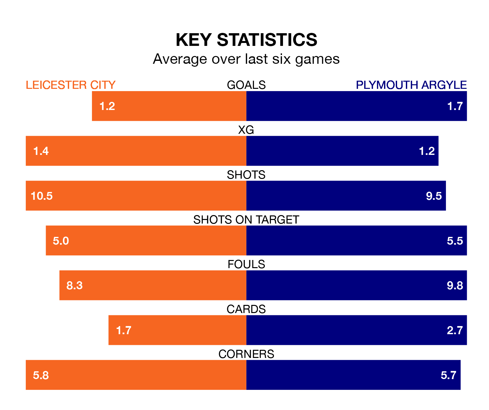

Leicester City are heavy favourites to keep all three points at home in Saturday's kick-off against Plymouth Argyle.
The Foxes, who sit top of the Championship with 19 games played, are priced at 1.3 to seal victory at the King Power Stadium.
Sitting 15 places and 24 points behind them in the table, Plymouth are 10.0 to win with *Betting Company*, while the draw is at 5.5.
With 34 goals in 19 games so far this season, Leicester are the league's joint-second-highest scorers with 1.8 goals per game. And they are conceding fewer than average, letting in 12 goals at a rate of 0.6 per game.
Plymouth are also above average scorers, with 1.6 goals per game, compared to a league average of 1.4. They have conceded 1.5 goals per game.
With Mads Hermansen between the sticks, City can rely on one of the league's safest pair of hands. He has kept six clean sheets in his 18 appearances this season, and only one other 'keeper – West Bromwich Albion's Alex Palmer – has been able to prevent the opposition scoring on more occasions in the Championship.
In Argyle's net, Michael Cooper has three clean sheets in eight games. He has conceded a goal every 72 minutes, twice as often as the 147 minutes between goals for Hermansen.
The Foxes are in mixed form in the Championship, with three wins and a draw from their last six games.
With two wins and a draw over that period, the Pilgrims' form is worse – they have taken seven points from 18, compared to the home team's 10.
Leicester's last match was on December 2, a 2-1 win against West Bromwich Albion, with Harry Winks and Kiernan Dewsbury-Hall getting the goals for the Foxes.
Plymouth beat Stoke City 2-1 last time out, also on December 2, with Adam Randell and Mustapha Bundu on the scoresheet.
